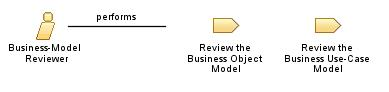

| Role: Business-Model Reviewer |
 |
|
Relationships
 |
||
| Primary Performs | ||
|---|---|---|
| Modifies |
|
|
| Process Usage | ||
Main Description
|
A person acting as business-model reviewer has some essential knowledge of the business domain or the technology envisioned
to automate the business. Another skill business-model reviewers need is detailed knowledge of the applied business
engineering technique. |